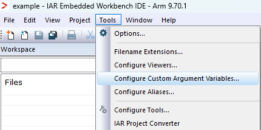
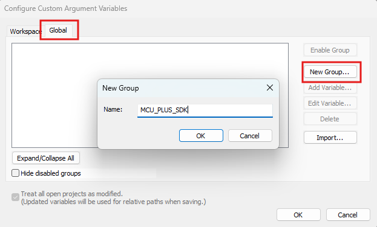
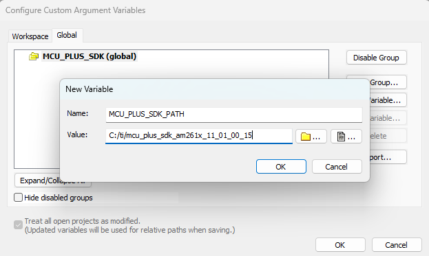

- Note
- The steps on this page show screen shots and description based on Windows.
-
By default, Importing of SDK example workspace to IAR EW performs a copy of example project files to IAR EW. User are free to modify the example files without affecting the files in the SDK installed location.
-
Importing the IAR project directly instead of workspace will create the project within the SDK directory. As a result, any modifications will be applied directly to the original SDK files.
-
Deleting the IAR EW project, deletes the project files from IAR EW workspace. User should be careful especially when the copied example files are modified by user.
Introduction
Some of the SDK examples can be built using IAR EW projects. Using IAR EW projects one can also open SysConfig from IAR EW itself to configure the example. This section provides basic instructions and tips on using IAR EW projects.
- Note
- To re-build libraries you need to use makefiles, see Using SDK with Makefiles
Setup IAR EW IDE
Setup IAR Embedded Workbench, SysConfig, and other necessary tools. Following the steps outlined in Download, Install and Setup IAR Embedded Workbench.
IAR Projects Files
- When a example workspace is imported into IAR EW, it brings in four main file types: a workspace template, a project file, a debug file, and project connection files.
- These files collectively store all project configuration data, including compiler settings, the list of files to compile, and required libraries for linking.
- During the import process, IAR EW asks the user to specify a new location for creating the workspace and importing all related files.
- The IAR project connection file (.ipcf) is central to this process, detailing the project files, compiler and linker options, and any custom pre/post-build steps
Configure SDK path to IDE
- Navigate to Tools > Configure Custom Argument Variables

IAR Custom Argument Variables
- Select the Global tab.
- Click the New Group button
- Enter MCU_PLUS_SDK as the Group Name, then Click OK.

IAR Custom Argument Variables
- Within the new group, click Add Variable button
- Set the variable Name to MCU_PLUS_SDK_PATH.
- Enter the SDK's file system location in the Value field (e.g., C:/ti/mcu_plus_sdk_am261x_11_01_00_15)
- Press OK to save changes

IAR Custom Argument Variables
- Note
- For Integrating sysconfig with IAR EW refer Configure Sysconfig to IAR Embedded Workbench IDE
Import a Workspace in IAR EW
- Directly importing an individual project from the MCU PLUS SDK into IAR Embedded Workbench is not supported. You must import the entire workspace containing the required projects instead.
- Navigate to
Toolbar > File > Open Workspace
- Browse to path ${SDK_INSTALL_PATH}/examples/
- All examples follow below naming convention to help you easily pick the example you need
{example name}_{soc board}_{cpu}_{os}_{compiler toolchain}
- You can also navigate to the example folder to pick a specific example. All examples are organized as below in the examples folder.
examples/{component or module}/{optional sub-module or sub-component}/
|
+ -- {example name}/{board on which this example can run}/
|
+ -- {cpu}_{os}/{compiler toolchain}
|
+ -- {example name}.template.eww --> This is the IAR Workspace template file.
- On opening the workspace template it will prompt to save to new folder.
- Click OK and select an folder location to where the project need to be imported. Then Press Save.
Build a Project in IAR Embedded Workbench
- To build a project "right-click" on the project name and select "Make" to build it
- By default it builds in "debug" profile, i.e without compiler optimizations. To build with compiler optimizations, click "debug" above the project files and select the "release" profile instead.
- You can explore additional project options by right clicking project name.
Build System Projects in IAR Embedded Workbench [Not Supported]
Load and Run Executables Built with IAR Projects
 1.8.20
1.8.20